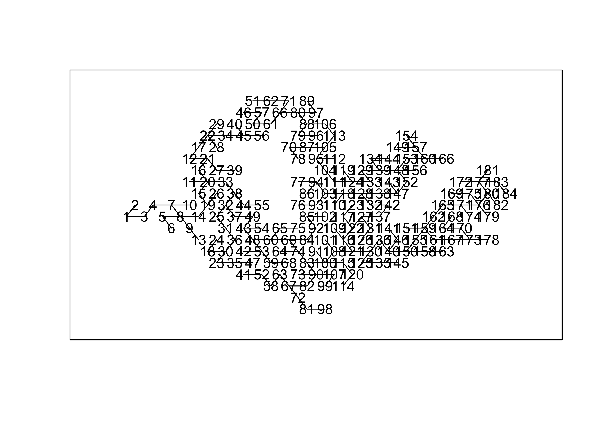

9 Principal Component Analysis
pc <- listings %>%
mutate(host_response_rate = as.numeric(host_response_rate), host_acceptance_rate=as.numeric(host_response_rate), host_listings_count=as.numeric(host_listings_count)) %>%
drop_na() %>%
select(minimum_nights, price, reviews_per_month, review_scores_rating, reviews_per_month, host_acceptance_rate, host_listings_count, host_response_rate) %>%
prcomp(., center=T, scale.=T)## Warning: NAs introduced by coercion## # A tibble: 7 x 4
## PC std.dev percent cumulative
## <dbl> <dbl> <dbl> <dbl>
## 1 1 1.44e+ 0 0.296 0.296
## 2 2 1.14e+ 0 0.186 0.482
## 3 3 1.03e+ 0 0.151 0.634
## 4 4 1.01e+ 0 0.146 0.779
## 5 5 9.18e- 1 0.120 0.900
## 6 6 8.38e- 1 0.100 1
## 7 7 3.90e-15 0 1listings2 <- listings %>%
mutate(host_response_rate = as.numeric(host_response_rate), host_acceptance_rate=as.numeric(host_response_rate), host_listings_count=as.numeric(host_listings_count)) %>%
drop_na() %>%
select(minimum_nights, price, reviews_per_month, review_scores_rating, reviews_per_month, host_acceptance_rate, host_listings_count, host_response_rate, planning_region) ## Warning: NAs introduced by coercion## Loading required package: lattice##
## Attaching package: 'caret'## The following object is masked from 'package:purrr':
##
## liftplnreg <- listings2 %>% drop_na() %>%
select(planning_region)
dummy_model <- dummyVars(~ ., data = plnreg)
dummy_sample <- predict(dummy_model, newdata = plnreg) %>%
as_tibble()dummy_sample <- dummy_sample %>%
rename(reg_central = `planning_regionCentral Region`, reg_north= `planning_regionNorth Region`, reg_east = `planning_regionEast Region`, reg_west=`planning_regionWest Region`, reg_northeast=`planning_regionNorth-East Region`)pc <- cbind(listings2, dummy_sample) %>%
select(-planning_region) %>%
prcomp(., center=T, scale.=T)
tidy(pc, "pcs")## # A tibble: 12 x 4
## PC std.dev percent cumulative
## <dbl> <dbl> <dbl> <dbl>
## 1 1 1.48e+ 0 0.182 0.182
## 2 2 1.35e+ 0 0.153 0.335
## 3 3 1.16e+ 0 0.112 0.446
## 4 4 1.04e+ 0 0.0901 0.536
## 5 5 1.02e+ 0 0.0870 0.623
## 6 6 1.02e+ 0 0.0862 0.710
## 7 7 1.00e+ 0 0.0838 0.793
## 8 8 9.77e- 1 0.0796 0.873
## 9 9 9.15e- 1 0.0698 0.943
## 10 10 8.29e- 1 0.0572 1
## 11 11 3.85e-15 0 1
## 12 12 2.98e-15 0 1
## # A tibble: 12 x 13
## column `1` `2` `3` `4` `5` `6` `7` `8`
## <chr> <dbl> <dbl> <dbl> <dbl> <dbl> <dbl> <dbl> <dbl>
## 1 host_… 0.570 -0.378 -0.0532 -0.0104 0.0585 0.0378 0.0411 0.0327
## 2 host_… 0.175 0.0874 -0.592 -0.0618 0.123 -0.0616 0.0562 -0.211
## 3 host_… 0.570 -0.378 -0.0532 -0.0104 0.0585 0.0378 0.0411 0.0327
## 4 minim… -0.167 0.0404 -0.357 0.0504 0.443 -0.223 -0.190 0.153
## 5 price 0.0537 0.0706 -0.107 0.460 -0.512 0.0642 0.0287 -0.594
## 6 reg_c… 0.383 0.595 0.0918 0.0256 0.0696 -0.0447 -0.0590 0.0513
## 7 reg_e… -0.165 -0.394 0.0554 -0.287 -0.248 -0.669 -0.0884 -0.164
## 8 reg_n… -0.111 -0.188 0.00191 -0.341 -0.00252 0.585 -0.611 -0.212
## 9 reg_n… -0.209 -0.197 0.172 -0.0164 0.463 0.234 0.605 -0.382
## 10 reg_w… -0.230 -0.302 -0.330 0.459 -0.202 0.231 0.0920 0.488
## 11 revie… -0.0193 -0.118 0.0222 0.523 0.440 -0.195 -0.424 -0.295
## 12 revie… 0.0753 -0.105 0.596 0.313 0.0561 -0.0413 -0.134 0.181
## # … with 4 more variables: `9` <dbl>, `10` <dbl>, `11` <dbl>, `12` <dbl>tidy(pc, "variables") %>%
filter(PC < 9) %>%
ggplot(aes(x=column, y=value))+
geom_hline(yintercept = 0) +
geom_col(aes(fill=(value>=0)), show.legend = FALSE)+
coord_flip() +
facet_grid(~PC)

9.1 PCA using varimax
fa <- cbind(listings2, dummy_sample) %>%
select(-planning_region) %>%
principal(nfactors=8, rotate="varimax")## Warning in cor.smooth(r): Matrix was not positive definite, smoothing was done## Warning in principal(., nfactors = 8, rotate = "varimax"): The matrix is not
## positive semi-definite, scores found from Structure loadings## Principal Components Analysis
## Call: principal(r = ., nfactors = 8, rotate = "varimax")
## Standardized loadings (pattern matrix) based upon correlation matrix
## RC1 RC6 RC8 RC3 RC7 RC2 RC4 RC5 h2
## minimum_nights -0.20 0.02 0.14 0.36 -0.06 -0.07 0.44 -0.40 0.55
## price -0.03 -0.02 0.04 0.10 -0.05 -0.04 0.08 0.92 0.87
## reviews_per_month 0.13 -0.05 -0.04 -0.78 -0.02 -0.08 0.19 -0.01 0.67
## review_scores_rating 0.05 0.02 -0.01 -0.11 0.04 0.04 0.90 0.10 0.83
## host_acceptance_rate 0.99 0.00 -0.02 0.01 -0.03 -0.01 0.00 0.00 0.98
## host_listings_count 0.19 -0.10 -0.05 0.74 -0.06 -0.08 0.11 0.06 0.62
## host_response_rate 0.99 0.00 -0.02 0.01 -0.03 -0.01 0.00 0.00 0.98
## reg_central 0.03 -0.61 -0.61 0.03 -0.40 -0.30 -0.04 0.03 1.00
## reg_east 0.01 1.00 -0.03 -0.04 -0.05 -0.04 0.02 -0.02 1.00
## reg_north -0.01 0.01 0.01 0.00 -0.01 0.99 0.02 -0.03 0.99
## reg_northeast -0.05 0.00 0.01 -0.03 0.99 -0.02 0.03 -0.04 0.99
## reg_west -0.03 -0.03 0.99 0.01 -0.04 -0.04 0.02 0.02 0.99
## u2 com
## minimum_nights 0.4479 3.7
## price 0.1250 1.1
## reviews_per_month 0.3323 1.2
## review_scores_rating 0.1709 1.1
## host_acceptance_rate 0.0163 1.0
## host_listings_count 0.3814 1.3
## host_response_rate 0.0163 1.0
## reg_central 0.0049 3.2
## reg_east 0.0019 1.0
## reg_north 0.0109 1.0
## reg_northeast 0.0054 1.0
## reg_west 0.0109 1.0
##
## RC1 RC6 RC8 RC3 RC7 RC2 RC4 RC5
## SS loadings 2.07 1.38 1.38 1.30 1.16 1.10 1.06 1.03
## Proportion Var 0.17 0.11 0.11 0.11 0.10 0.09 0.09 0.09
## Cumulative Var 0.17 0.29 0.40 0.51 0.61 0.70 0.79 0.87
## Proportion Explained 0.20 0.13 0.13 0.12 0.11 0.11 0.10 0.10
## Cumulative Proportion 0.20 0.33 0.46 0.58 0.70 0.80 0.90 1.00
##
## Mean item complexity = 1.5
## Test of the hypothesis that 8 components are sufficient.
##
## The root mean square of the residuals (RMSR) is 0.07
## with the empirical chi square 2686.88 with prob < NA
##
## Fit based upon off diagonal values = 0.85fa[['loadings']] %>%
unclass() %>%
as_tibble(rownames="listings") %>%
gather(key="component", value="value", -listings) %>%
ggplot(aes(x=listings, y=value))+
geom_hline(yintercept = 0)+
geom_col(aes(fill=(value>=0)),
show.legend=FALSE)+
ylim(-1,1)+ coord_flip()+
facet_grid(~component)